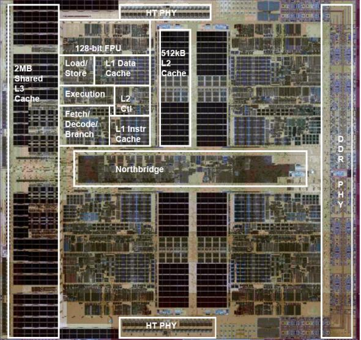
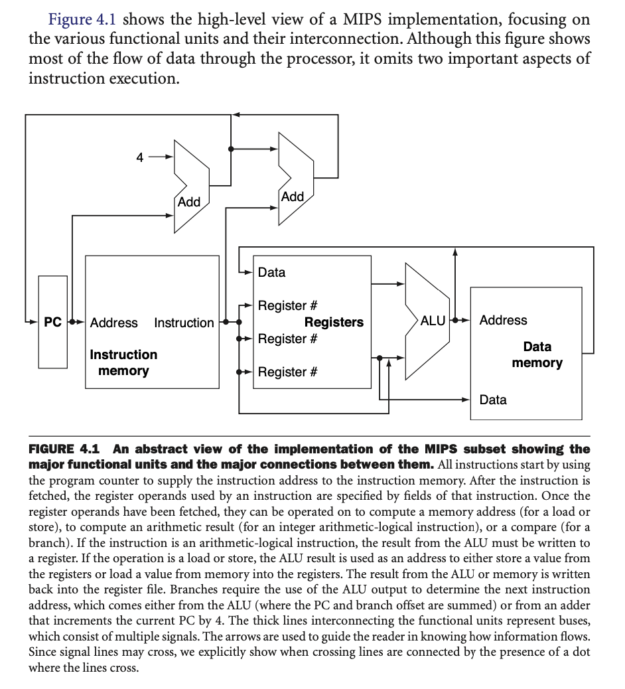
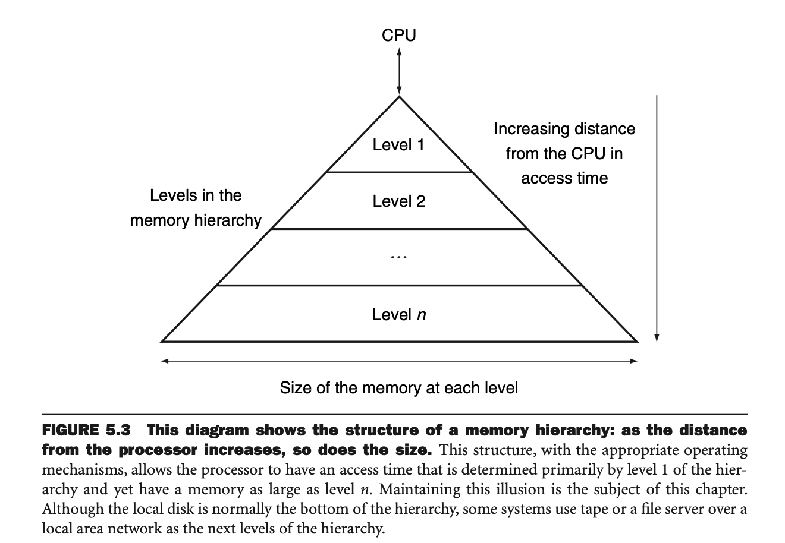
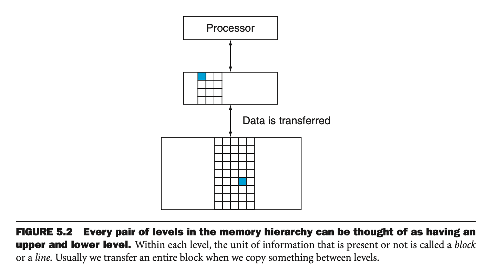
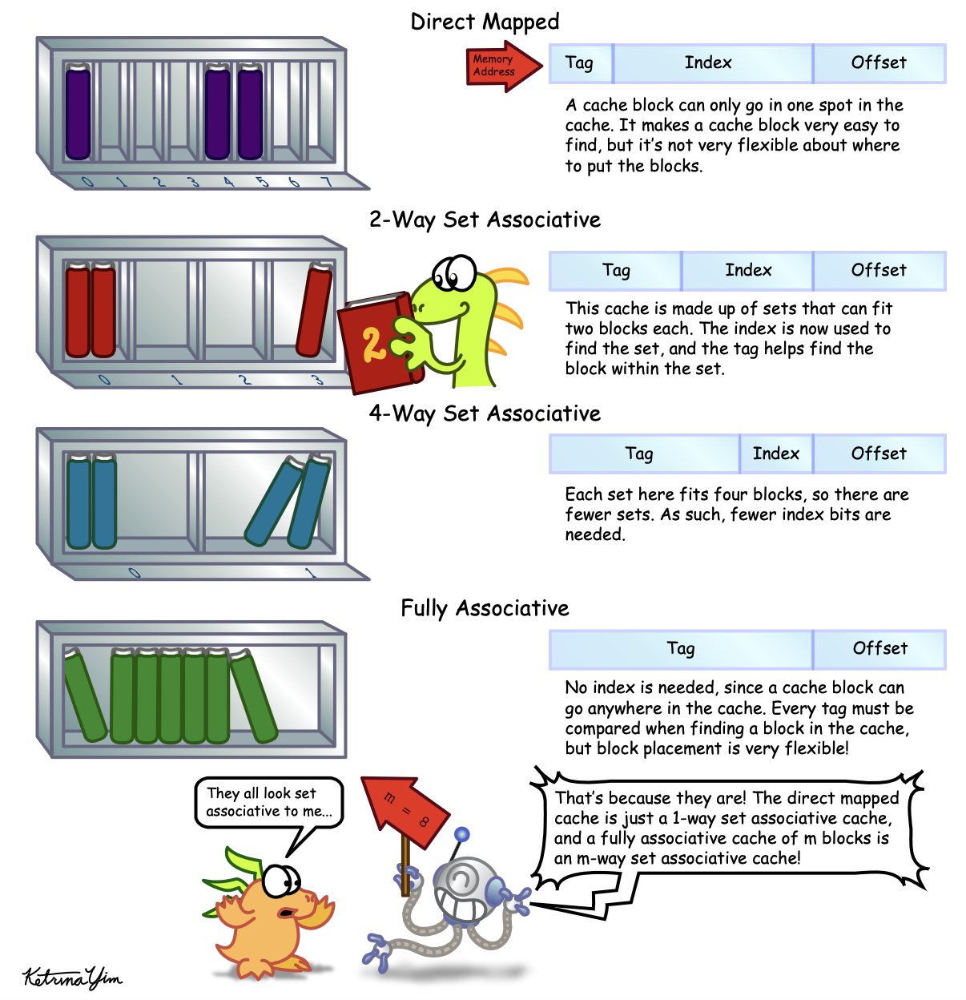

At a high level, any computer can be viewed as consisting of the following abstract components:
Input
Output
Memory
Processor = (Datapath + Control)
The processor can be viewed as consisting of two distinct sub-components: Datapath is the hardware responsible for performing all required operations (e.g. ALU, registers, internal buses), and Control is the hardware that tells the datapath what to do e.g. in terms of switching, operation selection, data movement between ALU components, etc. (Patterson and Hennessy 2011).
As a concrete example, below is a photograph of the quad-core AMD Barcelona processor chip, originally shipped in 2007, with overlaid diagram describing the various subcomponents.

To command a computer you must speak its language. The words of a computer language are called instructions, and its vocabulary called an instruction set. The stored-program concept is the idea that instructions and data of many types can be stored in a computer’s memory as numbers.
Conditional branch instructions are analogous to
if and goto statements in a programming
language e.g. the following “branch if equal” instruction
beq register1, register2, L1
goes to the statement labeled L1 if the value in
register1 and register2 are equal.
Addition, substraction, multiplication, division, floating point, ALU, etc.
To understand the basics of a processor implementation, we can look at the construction of the datapath and control path for an implementation of the MIPS instruction set. This includes a subset of the core MIPS instruction set:
The memory reference instructions load word (lw) and
store word (sw)
The arithmetic-logical instructions
add,sub,AND,OR, and
slt
The instructions branch equal (beq) and
jump(j)
Overall, much of what needs to be done to implement these instructions is the same regardless of the exact class of instruction. For every instruction, the first two steps are identical:
Send the program counter (PC) to the memory that contains the code and fetch the instruction from that memory.
Read one or two registers, using fields of the instruction to select the registers to read.
For example, the diagram below shows a high level, abstract outline of a MIPS processor implementation.

Note that the datapath elements of a MIPS implementation consists of two different type of logic elements:
Combinational: elements that operate on data values, where their outputs always depend only on the current inputs (i.e. think of them as implementing pure functions)
Sequential: elements that contain some internal state. These elements have at least two inputs and one output, where the inputs are:
The data value to be written.
The clock.
The output from a sequential logic component provides the value that was written in an earlier clock cycle.
A clocking methodology defines when signals can be read and when they can be written. We can assume an edge-triggered clocking methodology, which means that any values stored in a sequential logic element are updated only on a clock edge.
Since state (i.e. sequential) elements are the only ones that can store values, any collection of combinational logic must have its inputs come from a set of state elements and its outputs written into a set of state elements The inputs are values that were written in a previous clock cycle, while the outputs are values that can be used in a following clock cycle.
MIPS instruction execution classically takes five steps:
Fetch instruction from memory.
Read registers while decoding the instruction.
Execute the operation to calculate an address.
Access an operand in data memory.
Write the result into a register.
In an ideal world, we would have an infinitely large and fast memory for our computer, but this is not feasible in practice, since fast memory is costly. So, instead, we simulate the illusion of an infinite memory by using a memory hierarchy. That is, a progressively larger and slower series of caches that serve as memory for the processor.

Note that the principle of locality underlies the way that programs operate. That is, the assumption is that programs access a relatively small portion of their address space at any instant of time. There are two different types of locality:
Temporal locality: if an item is referenced at some point in time, it is likely to be referenced again soon.
Spatial locality: if an item is referenced, other items that are nearby are likely to be referenced soon.
We make use of this to construct the memory hierarchy from a series of caches, that get progressively faster and smaller as they get closer to the actual processor.
A memory hierarchy may consist of multiple levels, but data is copied only between two adjacent levels at a time, so we can consider only two levels when describing the caching mechanisms. There is an upper level (faster and closer to the processor) and a lower level. The smallest unit of information that can be either present or absent from any cache level is typically referred to as a cache block or line.

In a basic scenario, we can imagine that a processor issues memory requests that are each one word (e.g. 32 bits) and the blocks in the cache are also one word. If a cache contains words \(X_1,\dots,X_{n-1}\) prior to a request for a word \(X_n\) not in the cache, then a cache miss occurs and \(X_n\) is brought into the cache.
When servicing a processor request, we need to know (1) is the data item in the cache and, if so, (2) how do we find it? The simplest approach is to simply map each word to a locatino in the cache based on its address, which is known as direct mapping. This is essentially a simple hash based addressing scheme. With this approach, however, there may be collisions in addresses that map to the same cache location, so we need to deal with this. One approach is to add a set of tags to the cache. Basically, for each cache entry, we add a tag that contains the bits of the address that were not included in the hash function, so that we can disambiguate between two addresses that may map to the same cache location. In practice we may also include a valid bit that tells whether a particular cached value is currently valid to use or not.
An alternative to the direct mapping approach is to make the cache set associative. So, instead of giving every address exactly one location in the cache, we give it \(n\) possible locations, which we call \(n\)-way set associative. If the cache can hold \(m\) entries then a \(m\)-way set associative cache is also referred to as fully associative. In this other extreme, it means that a block can be placed anywhere in the cache, but then comes with the tradeoff that finding a block is more expensive, since we may need to search through every block to find it.

Note that allowing for more potential locations for a block can decrease contention for blocks, since if there are only a few unused blocks, a new request is then free to pick any unused block. This is in contrast to a direct mapped scheme, where choice of block is completely determined by the address mapping function. Also, in an associative cache, we have a choice of where to place the new block, so potentially a choice of which block to kick out of the cache. The most commonly used scheme is least recently used (LRU) i.e. we remove blocks that were unused for the longest time.
For multicore processors, multiple processors likely operate on a common physical address space. If different processors have their own caches, though, then this means that the view of memory held by different processors may be mismatched i.e. two processors see different values for a given memory location. This issue is generally referred to as the cache coherence problem.
Informally, we might want to define a memory system as being coherent if any read of a data item returns the most recently written value of that data item. This is a bit too simplistic, though, and this definition contains two different aspects of memory system behavior. The first, coherence, defines what values can be returned by a read. The second, called consistency, determines when a written value will be returned by a read. Considering coherence first, we say that a memory system is coherent if
A read by processor \(P\) to a location \(X\) that follows a write by \(P\) to \(X\), with no writes of \(X\) by another processor occurring between the write and the read by \(P\), always returns the value written by \(P\).
A read by a processor \(P_1\) to a location \(X\) that follows a write by another processor \(P_2\) to \(X\) returns the value written by \(P_2\) if the read and write are “sufficiently separated" in time and no other writes to \(X\) occurred between the two accesses.
Writes to the same location are serialized. That is, two writes to the same location by any two processors are seen in the same order by all processors.
The first property establishes a basic local ordering property for each processor i.e. it is what we would expect to hold true for a uniprocessor system. The second property defines a notion of what it means for multiple processors to have a coherent view of memory i.e. processors should observe the most recent effects of writes by other processors. The third property, write serialization, is also required, to ensure that all processors observe writes to a particular memory address in the same order.
In a cache coherent multiprocessor, the caches provide both migration and replication of shared data items:
Migration: A data item can be moved to a local cache and used there in a transparent fashion.
Replication: When shared data are being simultaneously read, the caches make a copy of the data item in the local cache. This reduces latency of access and contention for a read shared data item.
The protocols to maintain coherence for multiple processors are cache coherence protocols.
TODO: Snooping vs. directory-based cache coherence protocols.
In the same sense of smaller memory units acting as caches for main memory, we can also view main memory as acting as a “cache” for external storage: this technique is known virtual memory. The motivations for virtual memory were historically twofold:
Eliminate the programming burdens of only having access to a limited amount of main memory.
Allow safe and efficient sharing of memory between multiple programs.
The latter is the more important consideration in modern systems (since main memory units have gotten quite large). We would like to compile programs such that they use their own address space i.e. a separate range of memory locations accessible only to that program. Virtual memory implements the translation of a program’s address space to physical addresses.
Concepts between virtual memory and caches are essentially the same, but things carry different naming conventions for historical reasons.
page: a virtual memory block
page fault: virtual memory miss
With virtual memory, the processor produces a virtual address, which is translated through a combo of hardware + software into a physical address, which can be used to access main memory. This process is called address translation. It’s just another cache!
When a translation for a virtual page number is used, it will probably be needed again in th near future. So, modern processors include a special cache that keeps track of recent translations. Typically this cache is called the translation-lookaside buffer (TLB), but it would really be more appropriate to just call it a translation cache.
Hardware description languages (HDLs) are languages for describing digital circuits at a higher level of abstraction, rather than directly describing every logic gate and their exact placement, connections, etc.
Verilog is one of the most common HDLs, and it can be used to define both combinational and sequential circuits. As a simple example, we can describe a simple combinational circuit in Verilog as a module. For example, the following describes a circuit with one input and one output, where the output is the negation of the input.
module top_module(input a, output b);
assign b = !a;
endmoduleWhen circuits become more complex, we can also declare
wires, which are like internal connections that are not
externally visible outside of the module. For example, the following
declares an internal wire that takes on the negation of the input
a, and this wire is then fed (i.e. connected to) the
output. For this simple example the wire doesn’t really serve a
necessary purpose, but with larger circuits wires can help to decompose
more complex bits of logic.
module top_module(input a, output b);
wire w1; // wire declaration.
assign w1 = !a;
assign b = w1;
endmoduleVectors in Verilog are used to group related signals using one name
to make things more convenient. For example, declaring
wire [7:0] w; declares an 8-bit vector named w
that is functionally equivalent to having 8 separate writes.
Note how the declaration of a vector places the dimensions before the name. But, note that the part select (i.e. accessing a particular entry in the vector) has the dimensions after the vector name e.g.
wire [99:0] w; // declare 100 element vector.
assign out = w[3]; // part select one bit of the vector.More generally, the syntax for declaring vectors is as follows:
type [high:low] vector_name;where type specifies the datatype of the vector
(typically wire or reg). Note that the
endianness of a vector is whether the least significant bit has
a lower index (little endian [3:0]) or a higher index (big
endian [0:3]). Once a vector is declared with a particular
endianness, it must always be used the same way.